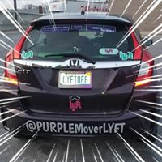
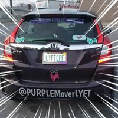

Welcome to Ariana Baseman's portfolio!
Who am I?
I grew up in Metro Detroit and moved out of state for college. I was gone for roughly 10 years and returned in 2006. I live in Ferndale, but consider myself "Detroit-ish" aka although not a resident, a HUGE supporter of the city and it’s revitalization.
When I first returned to the area, I started working in property management and moved up to corporate, in an accounting capacity, within a few years. With my degree in communications, I was surprised I enjoyed the paperwork side of things more than the face-to-face interactions with residents or the sales aspect of leasing. However, I learned I prefer the more absolute or definitive details in a work atmosphere more than the variables in sales.
In April of 2014, I began driving part-time for Lyft and felt like I found my calling. I LOVED the freedom of making my own hours and exploring the Detroit area; not to mention being social when I wanted to be, without the pressure of "making a sale". That summer I went full-time and created a "themed" Lyft (@PurpleMoverLyft), one of the few in the Detroit-market.
 


Over the last couple of years, I did re-enter the Property Management field for another year and a half, but, in May of 2016 was selected as the Driver Advisory Councilmember for Lyft in the Midwest. I decided, towards the end of 2016, to become a full-time driver again.
With the popularity of ride-sharing in general, and Lyft specifically, being a full-time driver has become less lucrative. I realized, with some advice from family-members, that I really need to enter the corporate world again; I just didn’t know in what way. In seeing advertisements for Grand Circus I felt that learning to become a developer makes a lot of sense for me.
So far, this coursework has been a lot more challenging that I expected. Especially without certain resources for guidance. I look forward to significantly improving these pages.